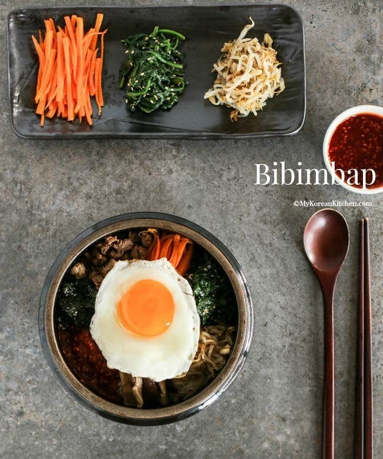

Bibimbap recipe

Delicious korean rice dish packed with nutrition; a balanced meal of veggies, protein and carbs.
Ingredients
Meat and marinade
- Meat mince
- Soy sauce
- Sesame oil
- Brown sugar
- Minced garlic
Vegatables and others
- Spinach
- Bean sprouts
- Shiitake mushroom
- Carrots
- Sea salt
- Steamed rice
- Eggs
- Cooking oil
Bibimbap sauce
- Gochujang
- Sesame oil
- Water
- Roasted sesame seeds
- Vinegar
- Minced garlic
Steps
- Marinade the meat for about thirty minutes, then cook for about
3-5 minutes on medium to high heat.
- Mix the bibimbap sauce.
- Blanch and cook the spinach and bean sprouts.
- Rinse, peel and julienne the carrots. Add cooking oil and sea salt, and cook
on medium to high heat for 2-3 minutes.
- Thinly slice washed shiitake mushrooms, then cook with cooking oil and sea salt
on medium to hogh heat for 2-3 minutes.
- Fry the eggs.
- Assemble the dish! Add a layer of steamed rice to a bowl, then add surrounding
circles of the vegatables and meat.
- Drizzle the bibimbap sauce on top, then mix and enjoy.